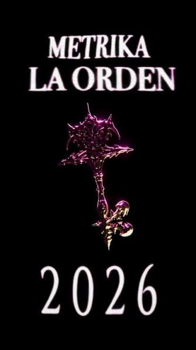
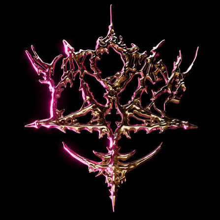

Canibalismo Místico
Vídeo local de Canibalismo Místico.
Vídeo musical de LA ORDEN.
Galería de La Orden
METRIKA

Imagen de La Orden: METRIKA

Símbolo de METRIKA
Póster de La Orden
METRIKA y su álbum
Fotografía de METRIKA
La Orden
Universo METRIKA
La Orden: Out Now
Animación de METRIKA
GIF de METRIKA
GIF de METRIKA: Tú eres perfecta.